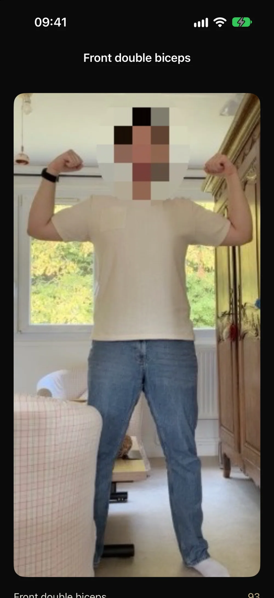

GUIDE · ENTRAÎNEMENT
Comment s’entraîner à poser seul
Sans partenaire, le problème n’est pas seulement de déclencher une photo : il faut savoir si la ligne tient avant de quitter la position.
Une installation reproductible
- Stabilise l’iPhone et libère assez d’espace pour montrer le corps entier.
- Choisis un fond et une lumière qui séparent clairement les bras et les jambes du décor.
- Marque ta place au sol pour retrouver la même distance à chaque essai.
- Répète une pose pendant quelques prises, puis compare la plus récente à une prise antérieure.

Évite trois erreurs fréquentes
Changer l’angle de vue. Un autre point de vue peut créer une différence apparente qui n’est pas une progression. Couper les extrémités. Les mains ou les pieds hors cadre rendent les repères moins fiables. Comparer des poses différentes. Garde le même nom de pose et des conditions proches avant de juger une évolution.
PoseLock peut afficher un score et verrouiller une photo lorsque la pose franchit son seuil. La vidéo analysée ne quitte pas l’iPhone ; les photos du journal restent locales. Le score n’est ni une évaluation médicale ni une note officielle de compétition.
Questions fréquentes
Dois-je enregistrer toute la séance ?
Non. PoseLock analyse la caméra en direct et garde une photo au moment du lock ; il n’envoie pas la vidéo de séance.
Comment comparer mes prises ?
Choisis la même pose, retrouve un cadrage proche et regarde d’abord la ligne générale. Le comparatif J-30 est une fonctionnalité Pro de l’app.
Une pose, un repère, une prise.
Découvrir le fonctionnement de PoseLock ou lire le guide front double biceps.